Recommendations From Me to You!
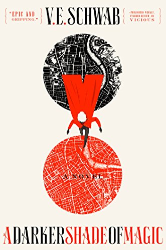A Darker Shade of Magic
Kell is one of the last Antari—magicians with a rare, coveted ability to travel between parallel Londons; Red, Grey, White, and, once upon a time, Black. Kell was raised in Arnes—Red London—and officially serves the Maresh Empire as an ambassador, traveling between the frequent bloody regime changes in White London and the court of George III in the dullest of Londons, the one without any magic left to see.Unofficially, Kell is a smuggler, servicing people willing to pay for even the smallest glimpses of a world they'll never see. It's a defiant hobby with dangerous consequences, which Kell is now seeing firsthand. After an exchange goes awry, Kell escapes to Grey London and runs into Delilah Bard, a cut-purse with lofty aspirations. She first robs him, then saves him from a deadly enemy, and finally forces Kell to spirit her to another world for a proper adventure.Now perilous magic is afoot, and treachery lurks at every turn. To save all of the worlds, they'll first need to stay alive.
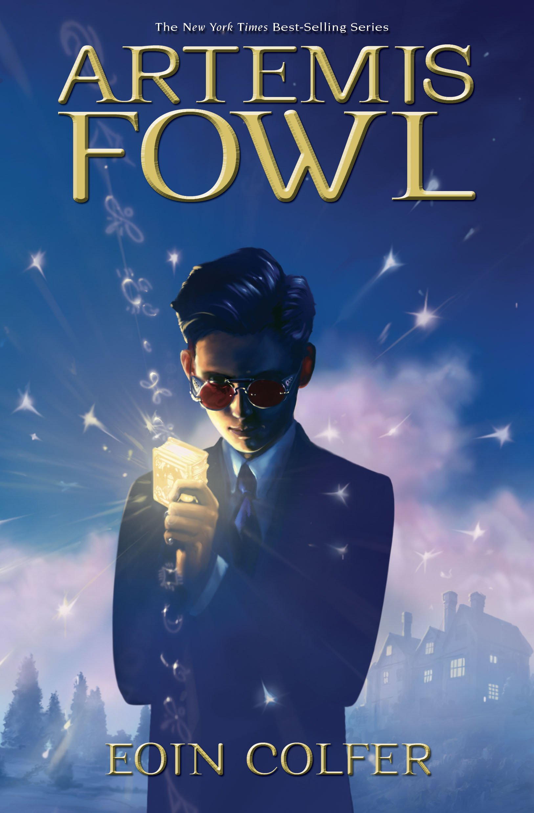Artemis Fowl
Twelve-year-old Artemis Fowl is a millionaire, a genius, and above all, a criminal mastermind. But even Artemis doesn't know what he's taken on when he kidnaps a fairy, Captain Holly Short of the LEPrecon Unit. These aren't the fairies of bedtime stories—they're dangerous! Full of unexpected twists and turns, Artemis Fowl is a riveting, magical adventure.
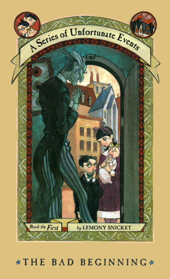A Series of Unfortunate Events
No one can balance absurdity and tragedy quite like Lemony Snicket. His talents are on full display in A Series of Unfortunate Events, thirteen unrelentingly dark yet deliciously readable books about the luckless Baudelaire children. Their troubles begin with their parents’ deaths and their adoption by Count Olaf, the notorious (albeit ridiculous) villain of the series who assumes a new identity in each book — all in pursuit of the Baudelaires’ vast fortune, which always seems just out of reach. This is the one shred of luck the children do have, as they’re repeatedly forced into miserable situations with various odd caretakers, and have little success uncovering the secrets behind their parents’ deaths (and the mysterious organization, V.F.D., to which they belonged).
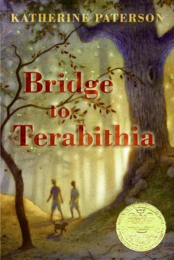Bridge to Terabithia
Summer vacation was not everything Jess Aarons hoped it would be, but there’s a treat waiting for him with the return of the school year: the opportunity to race his classmates and leave them all in his dust. He’s been practicing all summer and is pretty confident in his ability to pick up speed. And he would have won, if not for Leslie Burke, a new girl in school, who easily outruns everyone, including Jess. Post-race, it doesn’t seem like the two are on the verge of becoming BFFs. But they eventually discover they share more in common than the need for speed: imagination and love of fantasy. Together, Jess and Leslie create a magical kingdom in the woods called Terabithia — a place they can run and play, and where anything feels possible.

Cinder (Lunar Chronicles)
With this first installment in her series of quirky, sci-fi takes on classic fairy tales, Marissa Meyer invites readers into the world of Cinder: a cyborg living in the future city of New Beijing and repairing broken machines to support herself. She lives (of course) with her stepmother and stepsisters — until one day when her world is upended by one sister falling ill to a plague. In a quick sequence of events, Cinder finds herself being studied by the royal doctors, and swept up in a world of imperial politics and a looming war with the Lunar colonies. Add in a charming robot sidekick and the requisite swoony prince, and you’ve got a futuristic fairytale sure to entertain all the way to the moon and back.
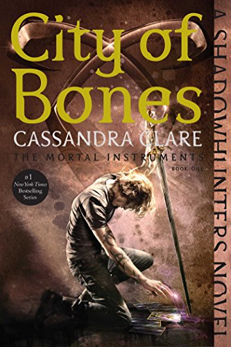City of Bones (The Mortal Instruments)
For anyone who doesn’t know, City of Bones is part of the Shadowhunters universe, a multi-series fantasy saga that encompasses (to date) fifteen novels across four series, three volumes of related short stories, four graphic novels, as well as the requisite movie and TV show adaptations — with plenty more still to come. This first book follows Clary: a seemingly ordinary girl in New York City whose life is turned upside-down when she stumbles upon the world of the Shadowhunters, humans with angel blood who are tasked with keeping the world safe from demons and other magical beings. It’s an exciting introduction to an enormous urban fantasy world, full of action, adventure, and romance, and has become an important part of many teenagers’ reading histories since its release in 2007.
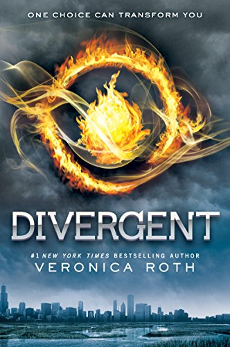Divergent
Divergent is one of those few. Set in an alternate-future Chicago, society is divided into five factions: Abnegation, valuing selflessness; Amity, valuing peace; Erudite, valuing knowledge; Candor, valuing honesty; and Dauntless, valuing bravery. You might think of them like Hogwarts Houses, only the stakes are a lot higher, and the divisions a lot sharper. But what happens when someone fails to fit neatly in one box?
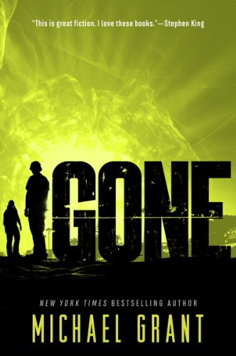Gone
In the blink of an eye, everyone disappears. Gone. Except for the young. There are teens, but not one single adult. Just as suddenly, there are no phones, no internet, no television. No way to get help. And no way to figure out what's happened. Hunger threatens. Bullies rule. A sinister creature lurks. Animals are mutating. And the teens themselves are changing, developing new talents—unimaginable, dangerous, deadly powers—that grow stronger by the day. It's a terrifying new world. Sides are being chosen, a fight is shaping up. Townies against rich kids. Bullies against the weak. Powerful against powerless. And time is running out: On your 15th birthday, you disappear just like everyone else...
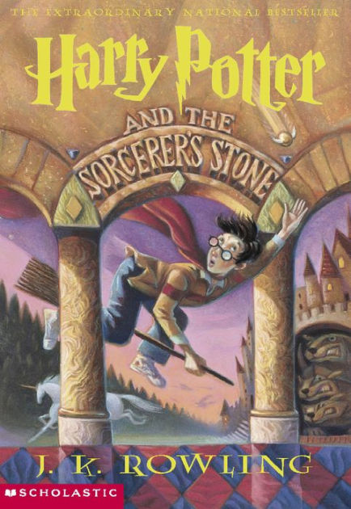Harry Potter
From the very first novel, Harry entrances us with his sympathetic tale: abused orphan to budding wizard, known throughout the magical community for causing the downfall of He Who Must Not Be Named. It’s a big legacy for anyone to live up, much less an eleven-year-old boy — but Harry wins over the wizarding world with his big heart and exceptional courage, and watching him grow over the course of seven novels is a true delight. These books are truly a magic trick, full of instantly memorable characters both good and evil, clever mysteries that take multiple installments to unravel, and the irresistible idea that love can save us all.
I'm not your perfect Mexican daughter
Fifteen-year-old Julia Reyes knows she isn’t her parents’ favorite daughter. That would be Olga, who helped their Amá clean houses, showed up faithfully to church each Sunday, and went to community college so she could live at home. Sweet-natured and devout, she was every bit the perfect Mexican daughter that brash, inquisitive Julia can’t seem to be. So when Olga dies in a car accident, aged twenty-two, she becomes enshrined in familial memory as something of a saint. I Am Not Your Perfect Mexican Daughter offers a sharply rendered portrait of a complicated grief. As Julia mourns, she clashes with parents who seem determined to remold her in the likeness of her dead sister — a sister who, it turns out, was far more complicated than the blameless Saint Olga of memory. Can Julia unravel the truth of Olga’s life and find her own place in a family that can’t seem to let her be herself?
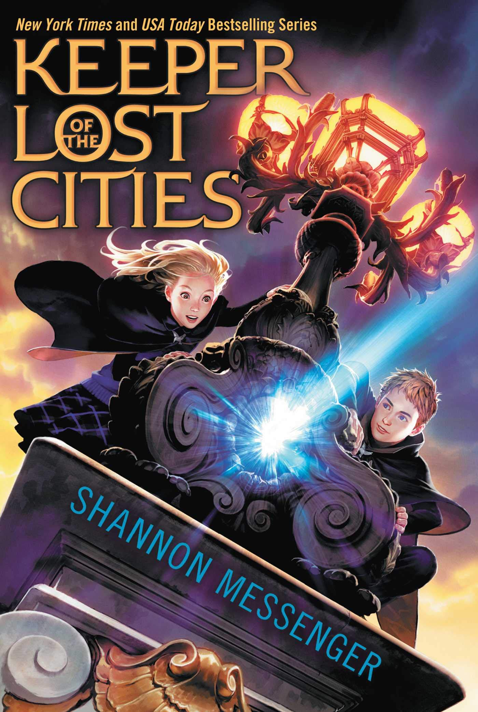Keeper of the Lost Cities
Twelve-year-old Sophie Foster has a secret. She’s a Telepath—someone who hears the thoughts of everyone around her. It’s a talent she’s never known how to explain. Everything changes the day she meets Fitz, a mysterious boy who appears out of nowhere and also reads minds. She discovers there’s a place she does belong, and that staying with her family will place her in grave danger. In the blink of an eye, Sophie is forced to leave behind everything and start a new life in a place that is vastly different from anything she has ever known. Sophie has new rules to learn and new skills to master, and not everyone is thrilled that she has come “home.” There are secrets buried deep in Sophie’s memory—secrets about who she really is and why she was hidden among humans—that other people desperately want. Would even kill for.
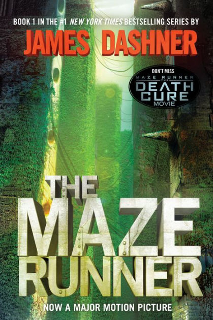Maze Runner
If you ain't scared, you ain't human.
When Thomas wakes up in the lift, the only thing he can remember is his name. He’s surrounded by strangers —boys whose memories are also gone.
Nice to meet ya, shank. Welcome to the Glade.
Outside the towering stone walls that surround the Glade is a limitless, ever-changing maze. It’s the only way out—and no one’s ever made it through alive.
Everything is going to change.
Then a girl arrives. The first girl ever. And the message she delivers is terrifying.
Remember. Survive. Run.
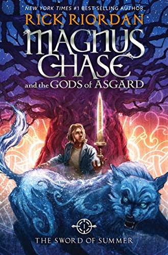Magnus Chase and the Gods of Asgard
Magnus Chase has seen his share of trouble. Ever since that terrible night two years ago when his mother told him to run, he has lived alone on the streets of Boston, surviving by his wits, staying one step ahead of the police and the truant officers. One day, Magnus learns that someone else is trying to track him down—his uncle Randolph, a man his mother had always warned him about. When Magnus tries to outmaneuver his uncle, he falls right into his clutches. Randolph starts rambling about Norse history and Magnus's birthright: a weapon that has been lost for thousands of years. The more Randolph talks, the more puzzle pieces fall into place. Stories about the gods of Asgard, wolves, and Doomsday bubble up from Magnus's memory. But he doesn't have time to consider it all before a fire giant attacks the city, forcing him to choose between his own safety and the lives of hundreds of innocents. . . .
Sometimes, the only way to start a new life is to die.
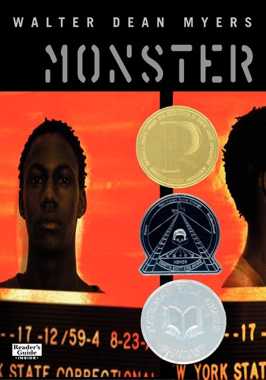Monster
Published in 1999, Monster was a revelation in a genre — and an industry — where very few books starred protagonists of color. Cleverly structured and rich in suspense, it tells the story of sixteen-year-old Steve Harmon’s trial for murder.
The text shifts between Steve’s diary entries and his in-progress screenplay — a way to use his passion for film to document the traumas inflicted by a broken legal system. Needless to say, this is a YA novel of tremendous complexity — both in the intricacy of its structure, and in its sensitive handling of topics from racial justice to the carceral state. The prosecutor paints Steve as a “monster,” a callous criminal unashamed to look the other way when his coconspirators turn to murder in an armed robbery gone wrong. To his film teacher, however, he’s a young man with tremendous artistic potential and a good heart. Not even Steve knows who he really is — not anymore. No matter what the final verdict, can he hold onto his sense of his own humanity?
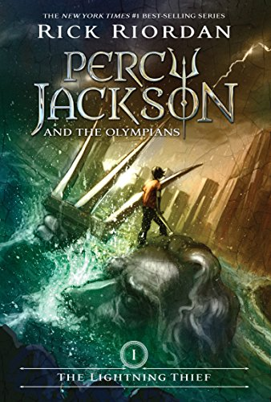Percy Jackson and the Olympians
Rick Riordan’s trailblazing YA fantasy series kicks off with one of the best premises this side of the millennium: twelve-year-old Percy Jackson discovering he is the son of Poseidon. This revelation leads him to Camp Half-Blood, where Percy adjusts to his new identity and meets fellow demigod kids. Along with his friends Luke and Annabeth, Percy soon embarks on a perilous quest to recover Zeus’ master lightning bolt, the disappearance of which has thrown Olympus into chaos. And this is only the beginning of the gripping Percy Jackson pentalogy, which is chock full of nail-biting suspense and enthralling mythological adaptation.
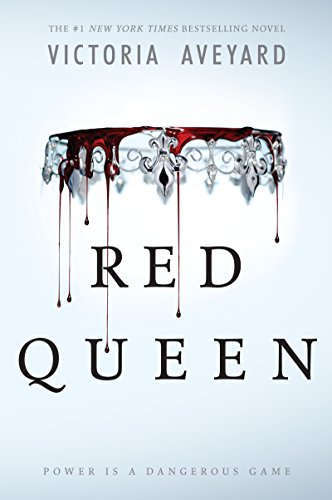Red Queen
This is a world divided by blood - red or silver. The Reds are commoners, ruled by a Silver elite in possession of god-like superpowers. And to Mare Barrow, a seventeen-year-old Red girl from the poverty-stricken Stilts, it seems like nothing will ever change. That is until she finds herself working in the Silver Palace. Here, surrounded by the people she hates the most, Mare discovers that, despite her red blood, she possesses a deadly power of her own. One that threatens to destroy the balance of power. Fearful of Mare's potential, the Silvers hide her in plain view, declaring her a long-lost Silver princess, now engaged to a Silver prince. Despite knowing that one misstep would mean her death, Mare works silently to help the Red Guard, a militant resistance group, and bring down the Silver regime. But this is a world of betrayal and lies, and Mare has entered a dangerous dance - Reds against Silvers, prince against prince, and Mare against her own heart.
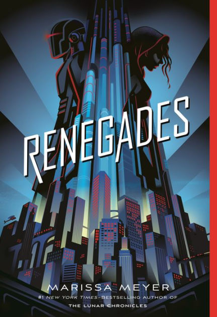Renegades
Secret Identities. Extraordinary Powers. She wants vengeance. He wants justice.
The Renegades are a syndicate of prodigies — humans with extraordinary abilities — who emerged from the ruins of a crumbled society and established peace and order where chaos reigned. As champions of justice, they remain a symbol of hope and courage to everyone... except the villains they once overthrew. Nova has a reason to hate the Renegades, and she is on a mission for vengeance. As she gets closer to her target, she meets Adrian, a Renegade boy who believes in justice — and in Nova. But Nova's allegiance is to a villain who has the power to end them both.
The Outsiders
Ponyboy Curtis is a legend in Tulsa, Oklahoma, and in the hearts of the readers who grew up with S.E. Hinton’s The Outsiders. Hinton herself was only 15 when she started writing this classic novel about two warring rival gangs: the working-class “greasers” and the privileged “Socs” (short for “socials”). Ponyboy, our protagonist, is a proud greaser who would die for his boys. But he didn’t actually think that mortality was in the cards — until the night that his friend Johnny murders a Soc. The two weeks that ensue will turn Ponyboy’s life — and maybe even his entire worldview — upside-down in this precocious book with a beating, emotional heart.
To All the Boys I've Loved Before
To All the Boys I’ve Loved Before is the story of Lara Jean, who has never openly admitted her crushes, but instead wrote each boy a letter about how she felt, sealed it, and hid it in a box under her bed. But one day Lara Jean discovers that somehow her secret box of letters has been mailed, causing all her crushes from her past to confront her about the letters: her first kiss, the boy from summer camp, even her sister's ex-boyfriend, Josh. As she learns to deal with her past loves face to face, Lara Jean discovers that something good may come out of these letters after all.
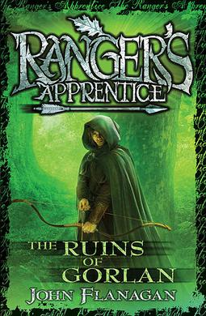The Ruins of Gorlan (Ranger's Apprentice)
They have always scared him in the past — the Rangers, with their dark cloaks and shadowy ways. The villagers believe the Rangers practice magic that makes them invisible to ordinary people. And now 15-year-old Will, always small for his age, has been chosen as a Ranger's apprentice. What he doesn't yet realize is that the Rangers are the protectors of the kingdom. Highly trained in the skills of battle and surveillance, they fight the battles before the battles reach the people. And as Will is about to learn, there is a large battle brewing. The exiled Morgarath, Lord of the Mountains of Rain and Night, is gathering his forces for an attack on the kingdom. This time, he will not be denied....
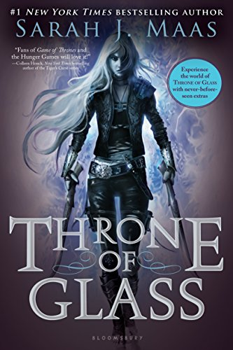Throne of Glass
After serving out a year of hard labor in the salt mines of Endovier for her crimes, 18-year-old assassin Celaena Sardothien is dragged before the Crown Prince. Prince Dorian offers her her freedom on one condition: she must act as his champion in a competition to find a new royal assassin. Her opponents are men-thieves and assassins and warriors from across the empire, each sponsored by a member of the king's council. If she beats her opponents in a series of eliminations, she'll serve the kingdom for four years and then be granted her freedom. Celaena finds her training sessions with the captain of the guard, Westfall, challenging and exhilarating. But she's bored stiff by court life. Things get a little more interesting when the prince starts to show interest in her ... but it's the gruff Captain Westfall who seems to understand her best. Then one of the other contestants turns up dead ... quickly followed by another. Can Celaena figure out who the killer is before she becomes a victim? As the young assassin investigates, her search leads her to discover a greater destiny than she could possibly have imagined.

The Hate U Give
Sixteen-year-old Starr Carter moves between two worlds: the poor neighborhood where she lives and the fancy suburban prep school she attends. The uneasy balance between these worlds is shattered when Starr witnesses the fatal shooting of her childhood best friend Khalil at the hands of a police officer. Khalil was unarmed. Soon afterward, his death is a national headline. Some are calling him a thug, maybe even a drug dealer and a gangbanger. Protesters are taking to the streets in Khalil’s name. Some cops and the local drug lord try to intimidate Starr and her family. What everyone wants to know is: what really went down that night? And the only person alive who can answer that is Starr. But what Starr does—or does not—say could upend her community. It could also endanger her life.

The Hunger Games
WINNING MEANS FAME AND FORTUNE.
LOSING MEANS CERTAIN DEATH.
THE HUNGER GAMES HAVE BEGUN.....
In the ruins of a place once known as North America lies the nation of Panem, a shining Capitol surrounded by twelve outlying districts. The Capitol is harsh and cruel and keeps the districts in line by forcing them all to send one boy and once girl between the ages of twelve and eighteen to participate in the annual Hunger Games a fight to the death on live TV. Sixteen-year-old Katniss Everdeen regards it as a death sentence when she steps forward to take her sister's place in the Games. But Katniss has been close to dead before—and survival, for her, is second nature. Without really meaning to, she becomes a contender. But if she is to win, she will have to start making choices that weight survival against humanity and life against love.
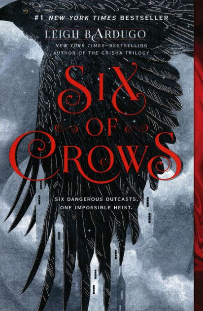Six of Crows
Ketterdam: a bustling hub of international trade where anything can be had for the right price—and no one knows that better than criminal prodigy Kaz Brekker. Kaz is offered a chance at a deadly heist that could make him rich beyond his wildest dreams. But he can’t pull it off alone. . . .
A convict with a thirst for revenge
A sharpshooter who can't walk away from a wager
A runaway with a priviledged past
A spy known as the Wraith
A Heartrender using her magic to survive the slums
A thief with a gift for unlikely escapes
Kaz’s crew is the only thing that might stand between the world and destruction—if they don’t kill each other first.
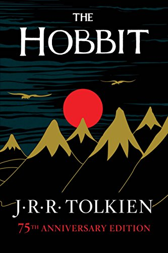The Hobbit, or There and Back Again
In a hole in the ground there lived a hobbit. Not a nasty, dirty, wet hole, filled with the ends of worms and an oozy smell, nor yet a dry, bare, sandy hole with nothing in it to sit down on or to eat: it was a hobbit-hole, and that means comfort. Written for J.R.R. Tolkien’s own children, The Hobbit met with instant critical acclaim when it was first published in 1937. Now recognized as a timeless classic, this introduction to the hobbit Bilbo Baggins, the wizard Gandalf, Gollum, and the spectacular world of Middle-earth recounts of the adventures of a reluctant hero, a powerful and dangerous ring, and the cruel dragon Smaug the Magnificent. The text in this 372-page paperback edition is based on that first published in Great Britain by Collins Modern Classics (1998), and includes a note on the text by Douglas A. Anderson (2001).